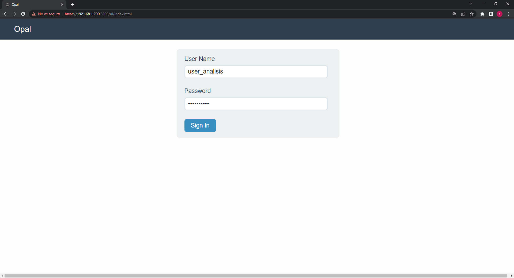
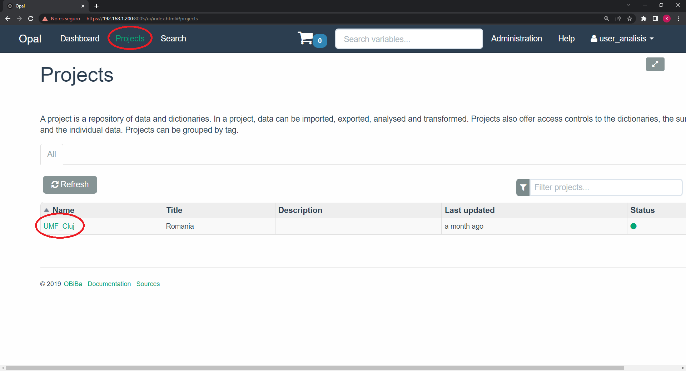
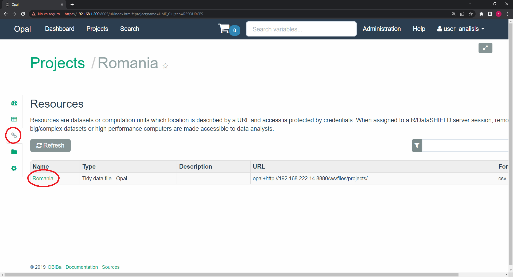

Part 1: Loading the data
Now that we are connected to the study servers, we have to load the data on the remote R sessions.
Loading the resources
We will begin by loading the resources. If we are not sure which resources has each study server, we can go to the user interface of the Opals. To do that, just go to your browser of choice and navigate to the server URL. Login with the same credentials you are using for DataSHIELD.

Once we login, we have to navigate to the Projects tab, there we will find the available projects on the Opal server, we have to write down the name of the project we are interested on using.

We then click on the project of interest. On the resources tab we will see the available resources. We have to write down the resource of interest.

We can therefore conclude that on the illustrated example, the information of interest is:
URL:
https://192.168.1.200:8005Project name:
UMF_ClujResource name:
Romania
With this information, we can go back to the RStudio and load the resources in the remote R sessions.
DSI::datashield.assign.resource(connections, "resource", "UMF_Cluj.Romania")Resolving the resources
Up to this point we have created an object called resource that contains all the information required to load the data to the R session. In order do so, we just have to “resolve” this object. We do that with the following function.
DSI::datashield.assign.expr(conns = connections, symbol = "data",
expr = "as.resource.data.frame(resource)")Now we have created an object called data. This object contains a dataframe with the data we will use to perform our analysis. We can check if that is true and the dimensions of this dataframe.
ds.class("data")$study1
[1] "spec_tbl_df" "tbl_df" "tbl" "data.frame" ds.dim("data")$`dimensions of data in study1`
[1] 999 132
$`dimensions of data in combined studies`
[1] 999 132